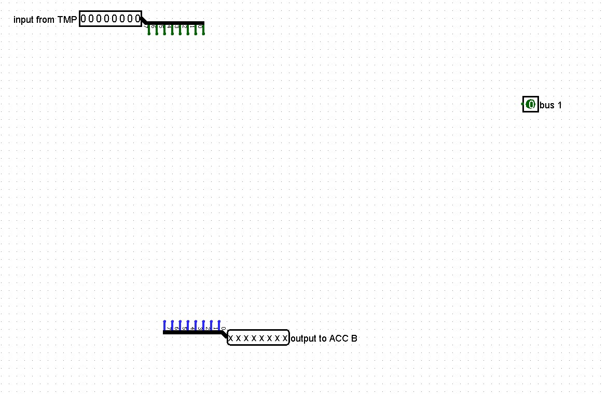
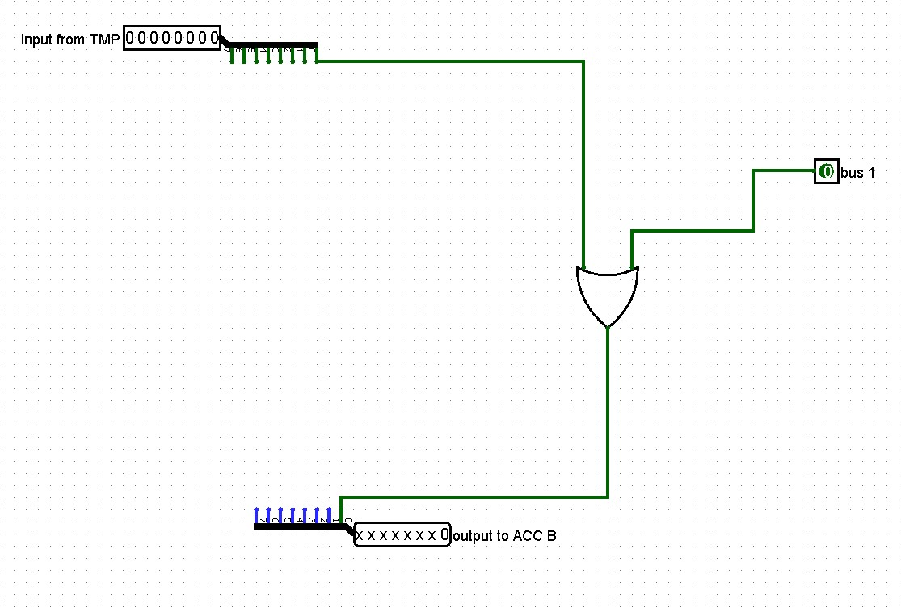
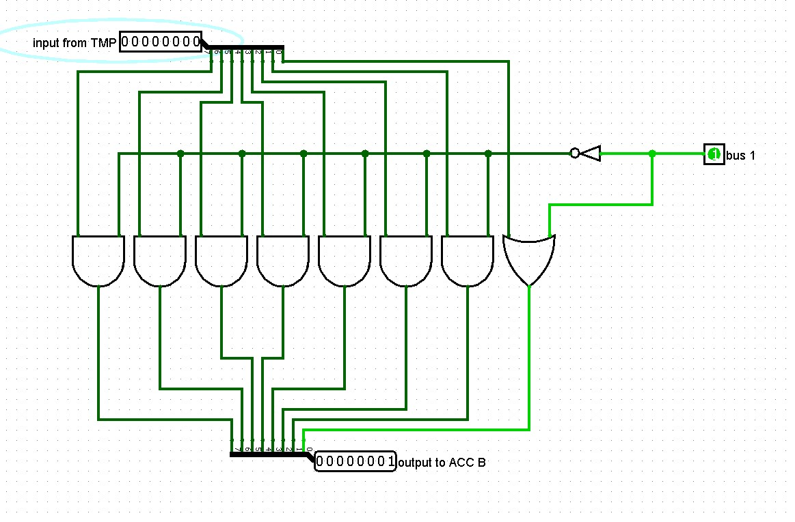

Overview
This "bus1" circuit is used to put a value of 1 (0000 0001) for Input B into the accumulator whenever the "bus 1" bit is 1. When the "bus 1" bit is 0, we pass the value from TMP to Input B.
To do this, we are going to start with an 8-bit input coming from TMP, an 8-bit output going to Accumulator B and a 1-bit input for bus 1.
Design & Logic
To make sure the output for the 0-bit is 1, whenever the bus-1 bit is 1, and the value stored in TMP whenever bus-1 is 0, we can just "OR" the 2 values together and take the output as the output for bit0.
For all of the other bit, we want them to be 0 whenever bus 1 is 1 and the value from TMP whenever bus 1 is 0. To do this, we can negate the bus 1 signal and combine that with the individual bits from TMP using an AND gate. This ensures that whenver bus 1 is 1, all bits 1-7 will be zero and whenever bus 1 is 0, all bits 1-7 remain unchanged (1's go through as 1's and 0's go through as 0's since they will be ANDed with a 1).
Testing & Appearance
As always, make sure to test your circuit to ensure that when bus-1 input is 1, output is 0000 0001 and whenever bus-1 input is 0, output is the same as "input from TMP". Lastly, you should change the circuits appearance to make it easier to incorporate into your final CPU.

Asset Register
| Type | Title / Alt | Current Relative URL | Planned GitHub URL |
|---|---|---|---|
| Image | Bus 1 – Inputs/Outputs | images/bus1-io.png | images/bus1-io.jpg |
| Image | OR for bit0 | images/bus1-or-bit0.png | images/bus1-or-bit0.jpg |
| Image | AND for bits 1–7 | images/bus1-and-bits1-7.png | images/bus1-and-bits1-7.jpg |
| Image | Appearance layout | images/bus1-appearance.png | images/bus1-appearance.jpg |